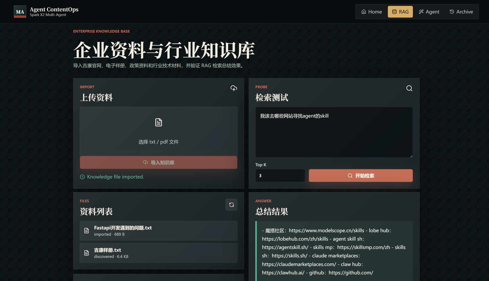
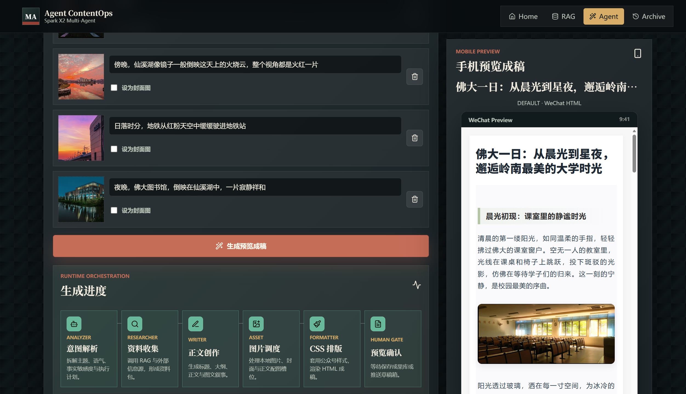
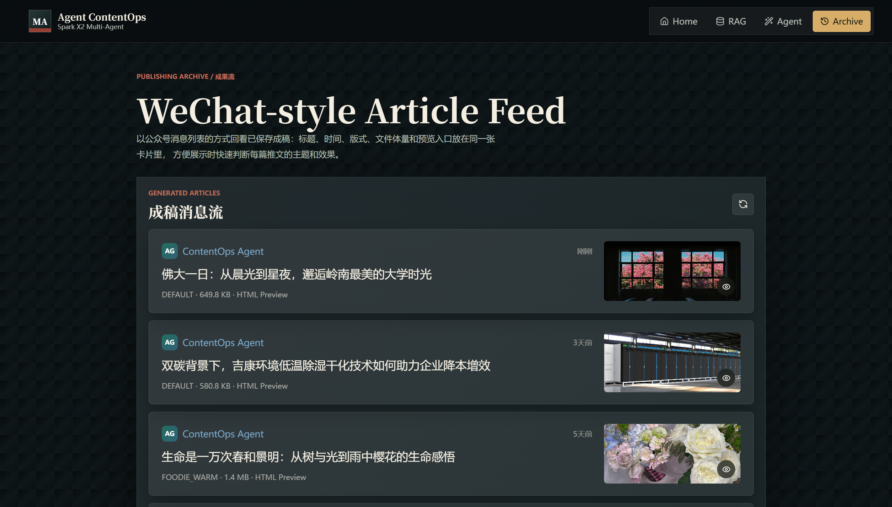
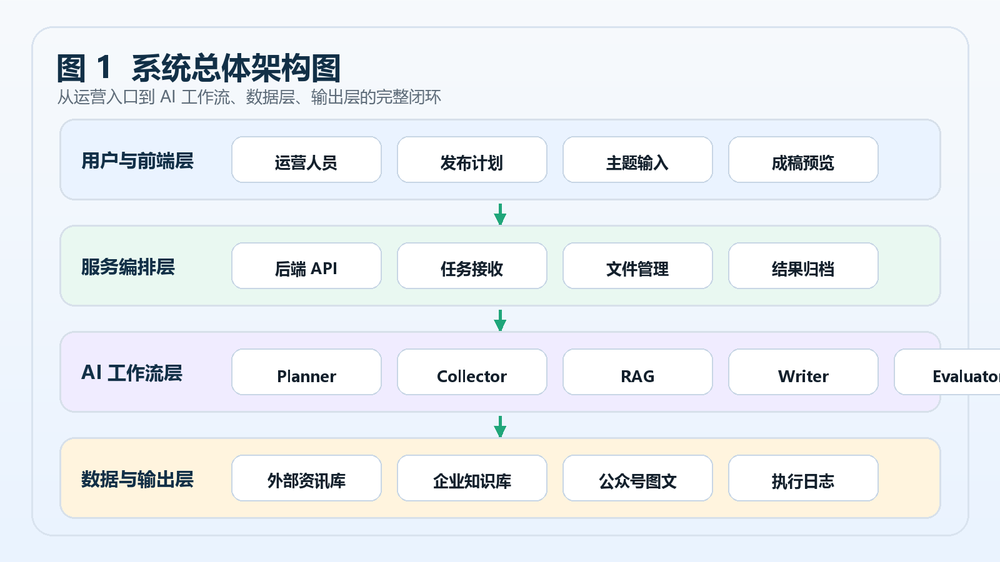

业务问题
企业公众号内容生产需要查资料、理解专业术语、组织素材、排版和审核。人工方式链路长，质量依赖个人经验，热点响应速度也不稳定。
Project Overview
企业公众号内容生产需要查资料、理解专业术语、组织素材、排版和审核。人工方式链路长，质量依赖个人经验，热点响应速度也不稳定。
系统通过 RAG 召回企业知识，再由 Multi-Agent 拆解任务，自动完成资料增强、文章生成、HTML 渲染、预览保存和发布入口衔接。
负责 FastAPI 后端、Vue3 前端、RAG 知识库、LangGraph 工作流、公众号生成流水线、演示视频和项目展示页整理。
Demo Video
当前视频已替换为最终版：data/演示视频-最终版.mp4。
Product Screens
首页承担项目的第一印象：说明系统目标、核心能力和进入生成流程的入口，让面试官能马上理解这是一个完整可操作的内容生成平台。

展示文档上传、知识库检索、召回内容与相似度结果，突出 RAG 能力不是概念，而是做成了可交互页面。

展示主题输入、Agent 执行进度、生成日志和移动端公众号预览，体现长任务可观察、结果可检查。

展示生成结果沉淀、列表检索和后续复用场景，让项目从一次性 Demo 延伸为可持续使用的业务工具。
展示页只使用系统界面截图与脱敏说明图，不放置任何公司样册、产品图片、客户资料或带有公司水印的不可公开素材。
System Design

Core Features
支持 TXT/PDF 文档导入、文本切分、Embedding 向量化、MD5 去重、Chroma 持久化和 Top-K 检索。
基于 LangGraph 将分析、检索、写作、排版、交付拆分为可观察节点，提升生成过程可控性。
后端线程执行生成任务，前端轮询展示 Agent 日志、当前阶段和最终结果，避免长任务黑盒化。
将 RAG 上下文、外部资讯、图片素材和 CSS 主题注入生成流水线，输出可预览的 HTML 成稿。
支持预览结果保存到历史作品库，并预留同步到微信公众号草稿箱的发布入口。
使用 VS Code + Codex 辅助需求拆解、模块实现、接口联调、异常排查和项目文档沉淀。
Run Locally
pip install -r requirements.txt
uvicorn backend.app:app --reload --host 127.0.0.1 --port 8000cd frontend
npm install
npm run devcd project_showcase
start index.html开源或部署前，请删除真实 API Key、.env、日志、node_modules、__pycache__、大体积缓存和敏感业务资料。